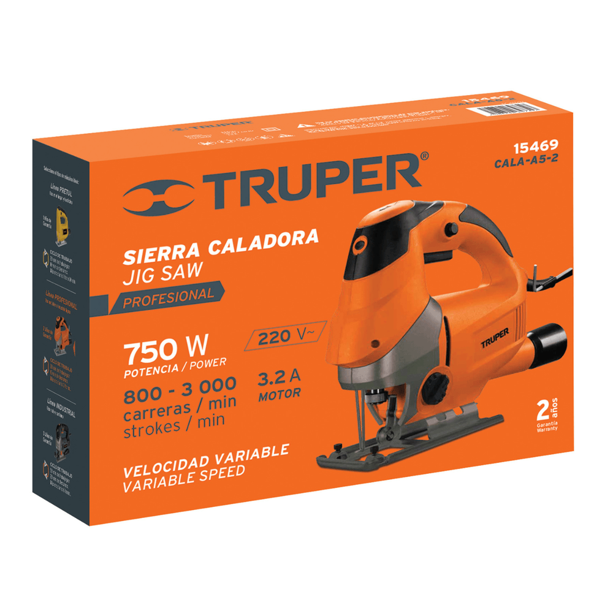

Sierra caladora

Máquina eléctrica que mueve una hoja de sierra de manera vertical y rápida. Permite realizar cortes curvos, rectos y recortes interiores en madera, plástico y otros materiales compatibles con la hoja instalada.